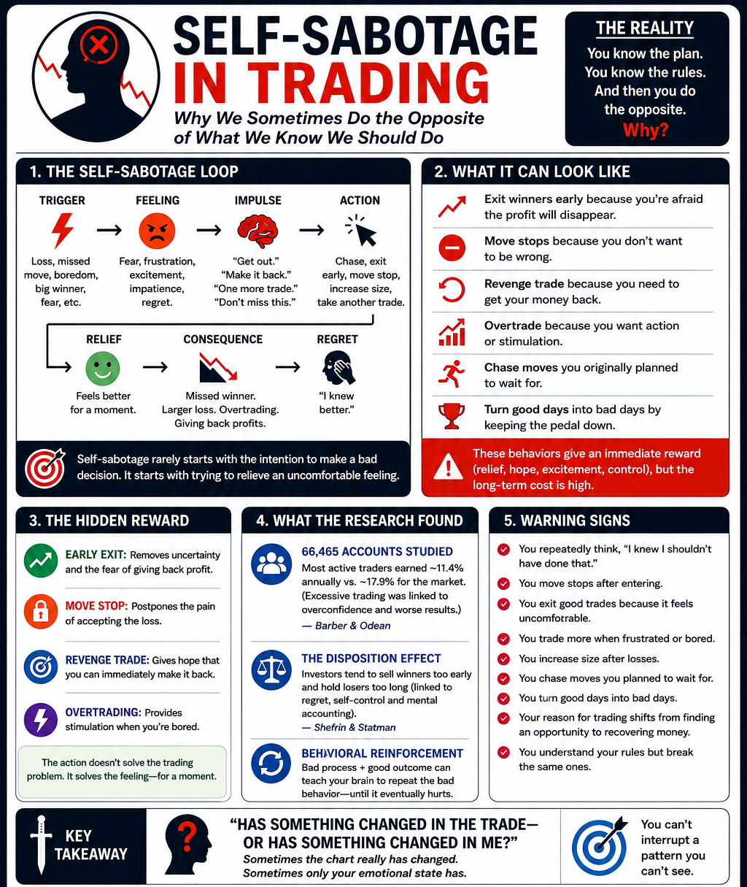

📖 GO DEEPER — OPTIONAL READING & PRACTICE CLICK TO EXPAND
The Subconscious Side
Our brains create automatic patterns—habits and learned associations—that may once have protected us but can later work against us.
- We seek immediate relief.
- We avoid discomfort.
- We repeat what was rewarded.
Awareness comes before change.
The “Inner Saboteurs”
Adapted from Shirzad Chamine’s Positive Intelligence framework and discussed by Tony Robbins.
HYPER-VIGILANT: Expects danger → can’t hold winners.
RESTLESS: Needs stimulation → overtrades.
CONTROLLER: Needs certainty → struggles to accept risk or losses.
AVOIDER: Avoids pain → moves stops or refuses to take losses.
HYPER-ACHIEVER: Never enough → keeps trading, always wants more.
JUDGE: Harsh self-criticism → can trigger emotional decisions.
Practical Exercise
When you break a rule, record these four things:
- What happened immediately before it?
- What were you feeling?
- What did you do?
- What did that action give you immediately?
Find the pattern.
Build a rule around the trigger.
Interrupt the Pattern
Design rules that protect you when your triggers fire.
- Cooldown after a loss.
- Predetermine risk and size.
- Define invalidation before entry.
- Use daily loss / profit limits.
- Trade only your setups.
- Reduce size when emotions are high.